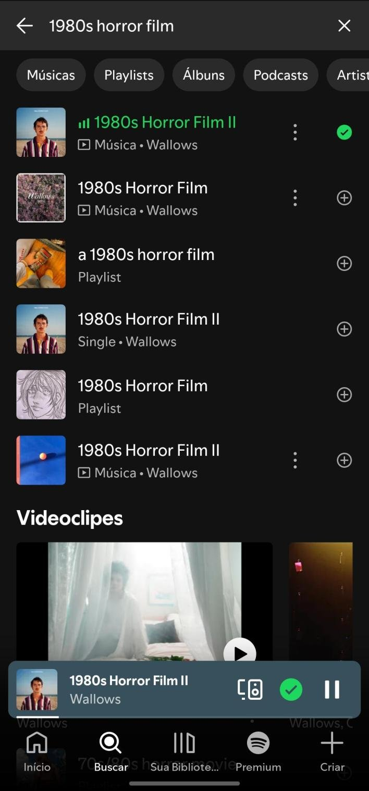
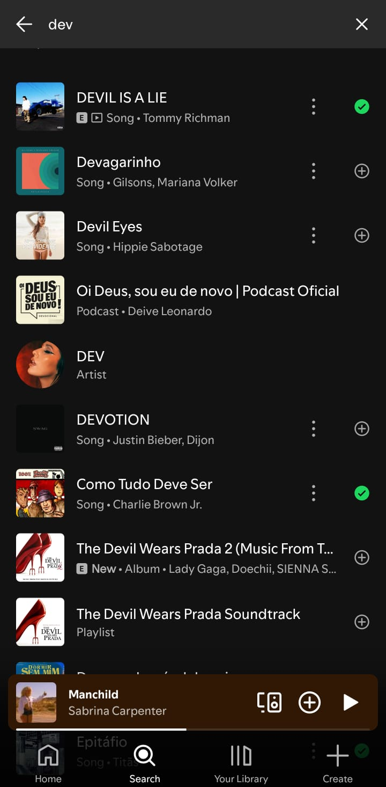
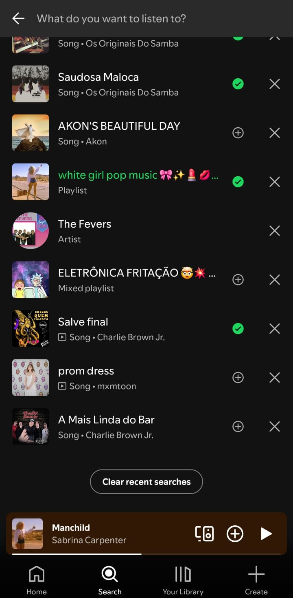
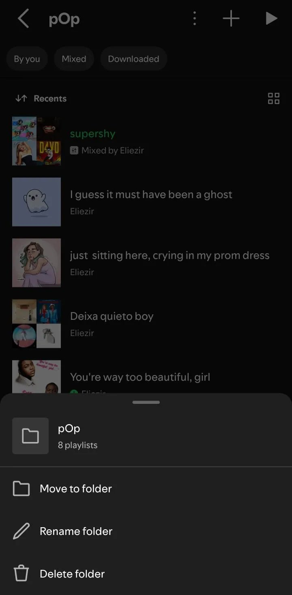
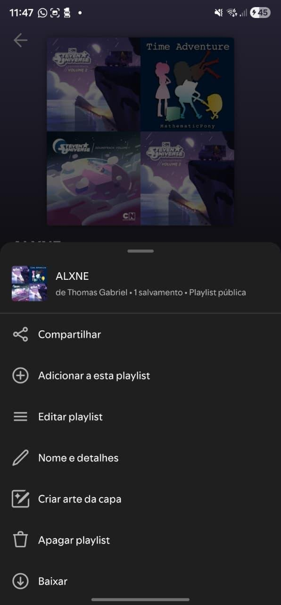
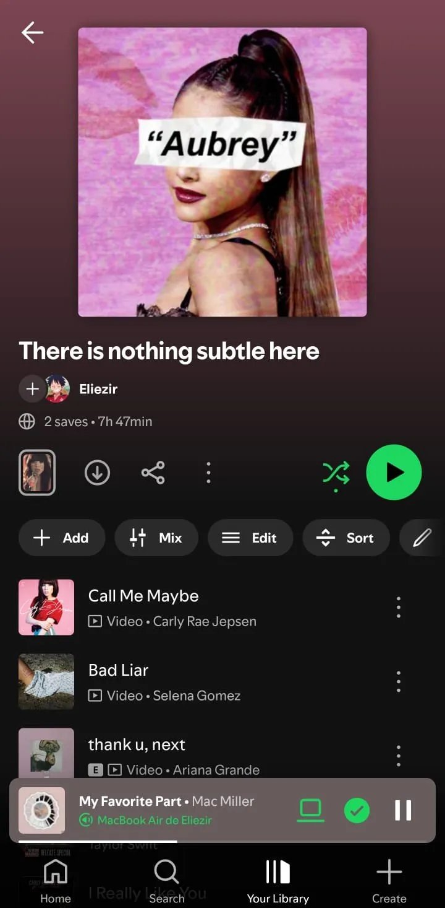
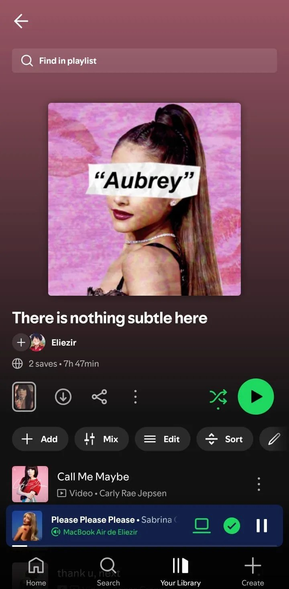

heurística.
O que é avaliação heurística
Método de inspeção em que avaliadores especialistas examinam uma interface contra um conjunto de princípios de usabilidade.
Barato. Rápido. Acionável.
com 3–5 avaliadores
por Nielsen
numa inspeção focada
Em vez de gastar tempo de usuário real com problemas que qualquer especialista detectaria, a heurística filtra a "casca grossa" dos defeitos primeiro. Eficiência de descoberta por baixo custo.
Severidade — escala 1 a 4
Cada problema recebe uma severidade combinando frequência, impacto e persistência. Quanto mais alto, mais urgente.
Os princípios — e quais o Spotify mais viola
Como conduzimos a inspeção
-
Inspeção individual Cada avaliador examinou as 3 funcionalidades isoladamente — registrando problemas, heurísticas violadas e severidade proposta.
-
Reunião de calibração Discussão coletiva de cada problema, fusão de duplicatas e ajuste de severidade quando havia divergência.
-
Consolidação Escrita do relatório final mesclado com tabela-resumo dos problemas únicos.
Métricas do estudo
somando os 4 avaliadores
de duplicatas
de 1 a 4
(maior consenso)
Filtros só aparecem após confirmar a busca ♡ ↗

Durante a digitação, o sistema mostra preview em tempo real com lista única e mesclada. Os filtros (Músicas, Artistas…) só aparecem depois de pressionar Enter.
- H4 · Inconsistência — mesmo campo, dois comportamentos sem aviso visual.
- H1 · Visibilidade — preview parece a tela "final".
- H6 · Eficiência — quem sabe o que quer não tem como filtrar antes.
Exibir chips horizontais de categoria já durante a digitação, com o preview adaptado ao filtro selecionado.
Diferenciação visual fraca entre resultados ♡ ↗
Resultados com capa quadrada idêntica para tudo, diferenciados apenas por label textual minúsculo. Música, artista, álbum, podcast e playlist aparecem misturados em sequência única.
- Cápsula visual idêntica — mesma capa quadrada para todos os tipos.
- Mistura de categorias — música, artista, álbum, podcast em sequência única.
- Variantes repetidas — áudio, vídeo e single da mesma faixa geram ruído.
Agrupar por categoria · capa circular para artistas · ícones distintivos por tipo · colapsar variantes da mesma música.

Acesso ineficiente ao "Limpar pesquisas recentes" ♡ ↗
O botão de limpar histórico fica posicionado no final da lista de pesquisas recentes — o usuário precisa fechar o teclado, rolar até o fim e só então clicar.
- Tarefa simples que vira 5 ações físicas (fechar teclado, rolar, scroll bottom, achar botão, clicar).
- H3 violada — controle prejudicado por caminho longo.
- H7 violada — eficiência sacrificada pelo posicionamento.
Reposicionar o botão no topo da seção, ao lado do título "Pesquisas recentes" — padrão usado pelo próprio Spotify em outras telas (notificações, biblioteca).

Descobribilidade: o que está oculto




Padrão comum: minimalismo estético sacrificando descobribilidade. H1 e H5 estão em todos.
Ausência de "Desfazer" ao remover músicas
Inconsistência interna grave: dois fluxos de exclusão coexistem no mesmo app, com tratamentos opostos para erros do usuário.
Toque na música → "Remover da playlist" → música some sem confirmação. Sem snackbar. Sem desfazer.
Botão Editar → remover ⊖ → confirmar → snackbar com botão "Desfazer".
Atritos na manipulação direta
⊖ (círculo com traço) e ☰ (três linhas) não são autoexplicativos — exigem aprendizado.Ausência de seleção múltipla
Não é possível selecionar múltiplas músicas para remover ou mover em lote. Em playlists longas (50+ faixas), organizar exige repetir o mesmo gesto dezenas de vezes.
Padrão presente em virtualmente todos os apps de música/biblioteca — Apple Music, YouTube Music, biblioteca de fotos, e-mail.
Playlist criada como pública por padrão
Toda playlist é criada como pública, sem que o usuário possa definir privacidade no momento da criação. Para tornar privada, é preciso depois abrir o menu da playlist e alternar.
Embora envolva privacidade do usuário, a equipe considerou severidade 2 — o usuário pode alterar a privacidade depois nas configurações da playlist, mas a ausência da opção no fluxo de criação ainda pode levar a exposições não intencionais.
Descrição e "Adicionar músicas" mal posicionados
- Adicionar descrição está oculto dentro do menu horizontal (3 pontos).
- Adicionar músicas fica no rodapé da playlist — divergindo do padrão da busca global, que está no topo.
- H1 · funcionalidade central invisível à primeira vista.
- H4 · inconsistência com outros padrões do próprio app.
- Usuário precisa aprender caminhos não óbvios para tarefas básicas.
Recursos avançados do Spotify — restritos a Premium — que expõem termos técnicos de DJ (BPM, notação Camelot, formas de onda) sem mediação para o usuário comum.
Ausência de onboarding em mixagem
Termos especializados despejados sem explicação:
Notação Camelot exige conhecimento de teoria musical e prática de DJ.
Sistema não explica como a mixagem é construída antes de criar a playlist combinada.
- Que critérios são usados?
- Qual a diferença entre Blend, playlist colaborativa e compartilhada?
- O resultado é uma surpresa — boa ou ruim.
Limite oculto de intervalo editável na transição
O editor de transição possui um limite máximo de intervalo editável — mas não exibe a duração em segundos, nem indica qual é o limite, nem explica o motivo do limite.
Sem feedback (H1) e sem rota clara para entender/contornar (H3), o usuário fica preso num estado opaco.
Recurso Premium sem mensagem clara para free
Usuário free toca em "Edit Transition" → o sistema não responde ou abre uma tela vaga, sem indicar que é restrição de plano.
Embora a falta de mensagem prejudique a comunicação, o usuário rapidamente percebe que se trata de feature Premium pelo contexto, e o impacto cognitivo é baixo.
Processo de Blend com muitas etapas
Convidar uma pessoa e gerar a playlist Blend exige múltiplos passos: abrir biblioteca → "+" → escolher Blend → selecionar pessoa → enviar convite → aguardar aceitação → abrir notificação → começa a montagem.
H6 violada: uma funcionalidade social precisa ser leve. Cada etapa extra é um ponto onde o convite pode morrer.
Heurísticas mais violadas — 18 problemas
Padrão: H1 lidera, com H4, H5 e H6 empatadas em segundo — falhas de descoberta, consistência e eficiência. H9 zerada — Spotify acerta na recuperação de erros.
Distribuição por severidade
P 2.2 · Menu da playlist sobrecarregado
P 2.5 · Ausência de Desfazer
P 3.1 · Onboarding em mixagem
P 3.4 · Etapas do Blend
Padrões e trade-offs
Spotify é maduro visualmente, mas peca em descoberta de funcionalidades.
Quer ir mais fundo?
As 10 heurísticas vêm da Nielsen Norman Group — referência mundial em UX research desde 1998.
Artigos, estudos, vídeos e o texto original das 10 heurísticas — todos abertos e gratuitos.

Jakob Nielsen explica, em primeira mão, o método que usamos nesta inspeção.